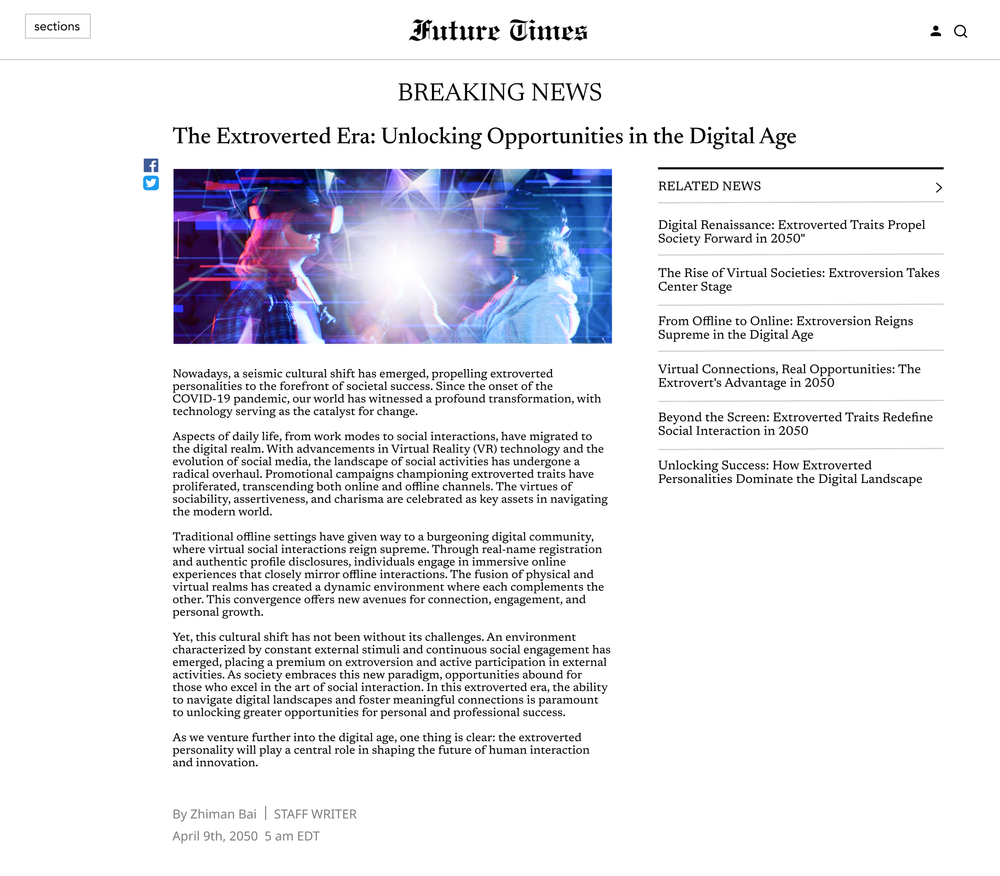
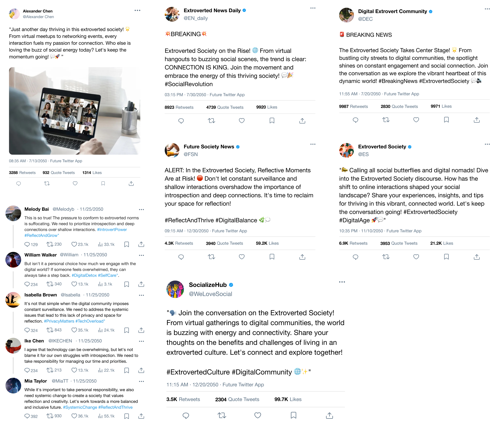
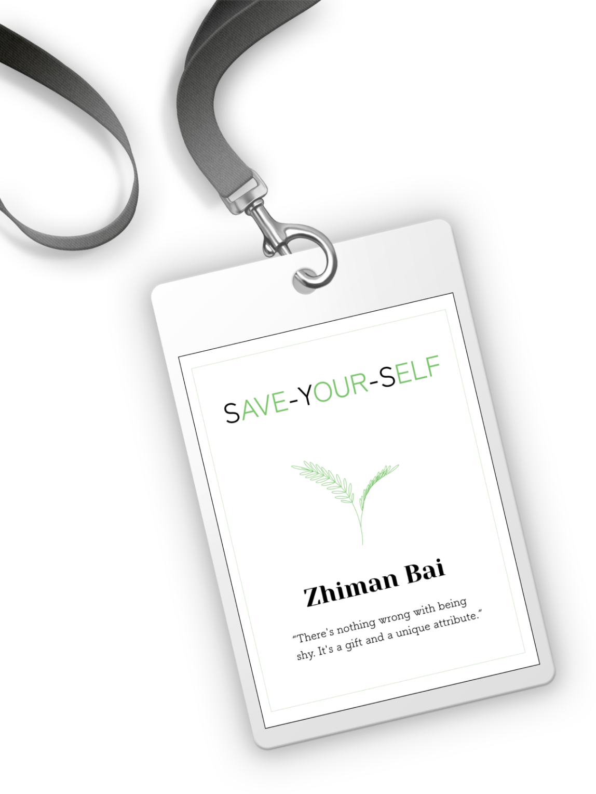
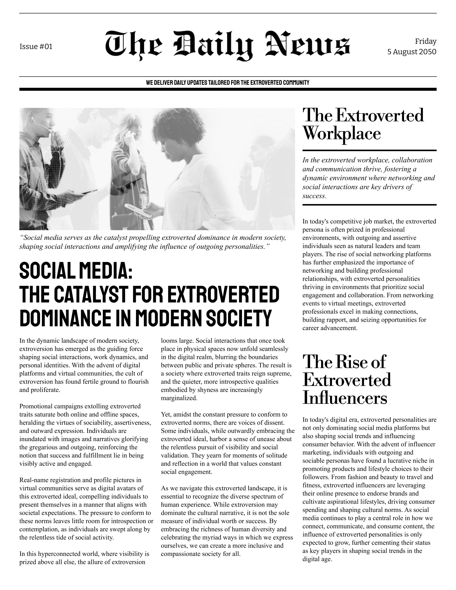
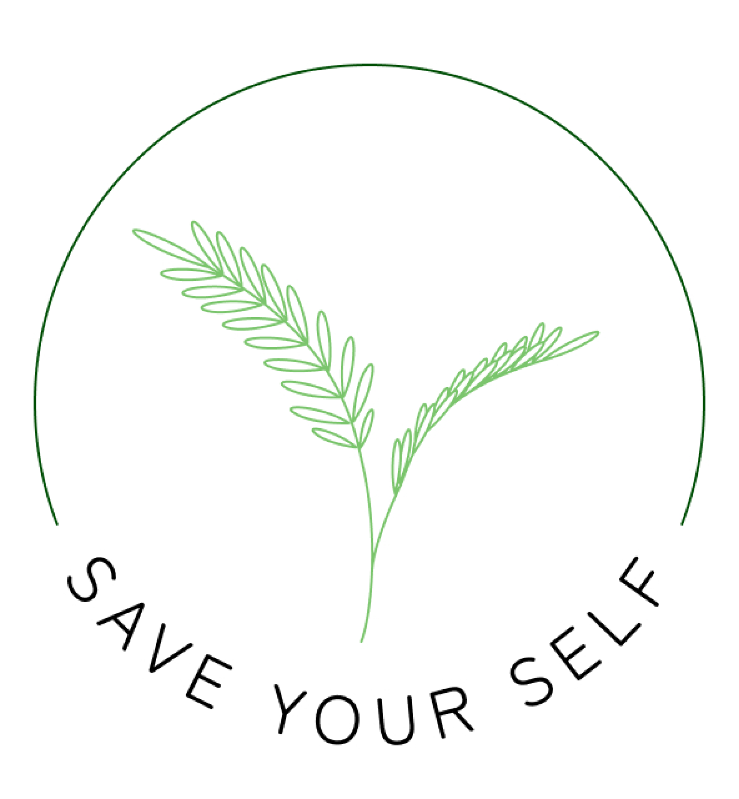
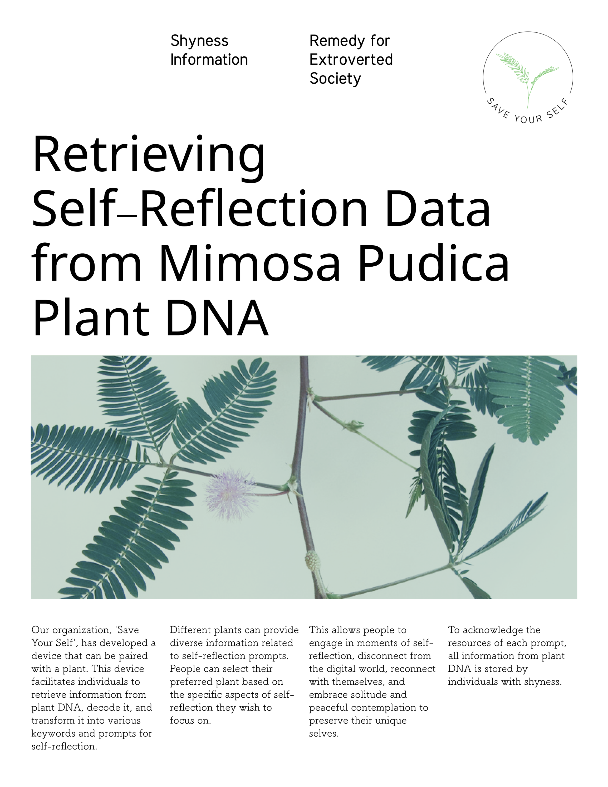
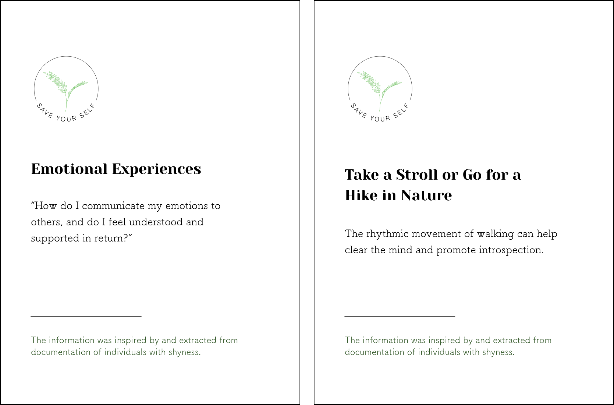
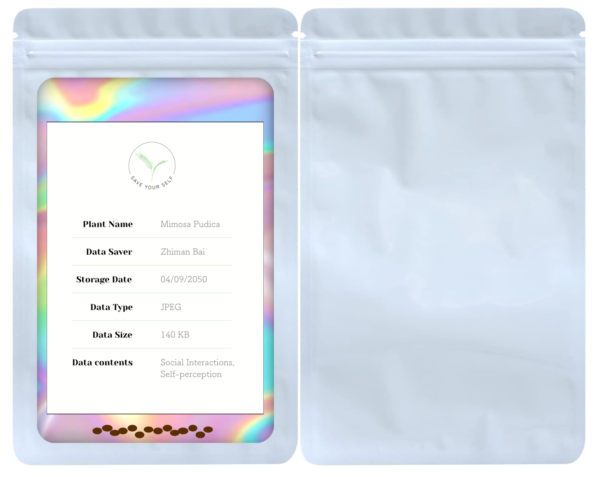

Overview
Shyness is often stigmatized and understood as reticence or social deficiency. Despite being a common and universal experience, shyness is generally perceived as a negative trait in society, obscuring positive aspects that might accompany it such as heightened empathy and thoughtfulness. This widespread stereotype can amplify concerns among shy individuals regarding potential negative judgment and rejection in specific social situations.
Human beings' inherent need for social interaction and relationships is driven by their reliance on each other for survival. Based on theoretical frameworks in social psychology that link shyness to people's concerns with external perceptions and evaluations, this thesis seeks to assist in understanding the intricate nature of shyness through a Speculative Design installation. It acknowledges the dual role of shyness, inhibiting and empowering across various aspects of life, and emphasizes the significant influence of social acceptance on coping mechanisms and interpersonal dynamics.
Developed using the Speculative Design approach, the final design incorporates a dystopian future scenario envisioning attitudes in society towards extroversion and shyness in 2050, along with the role of shyness in society. An installation presenting diverse artifacts aims to stimulate critical reflection on social perceptions of shyness. The thesis concludes by advocating for a paradigm shift in societal attitudes towards shyness, positioning it as a natural facet of human diversity rather than a limitation. The study concludes with an aspiration to cultivate an environment where individuals feel empowered to navigate social interactions with support and inclusivity regardless of their shyness.
The Role of Social Perception in Shyness
Shyness is a common and universal experience; it operates as a personality. Although its origin may vary, shyness is not to be seen as a disease or any disorder that necessitates medical treatment.
Innate Need for Social Acceptance
Human beings desire to form friendships, have group members, choose mates, and develop other relationships as innate behaviors. Thus, individuals who experience shyness inherently desire to connect with others and foster meaningful relationships within social groups. However, individuals with shyness have concerns about how others perceive and evaluate them, their shyness is primarily driven by a strong desire for social approval and a fear of disapproval.
Objective
Firstly, I argue that nowadays pervasive negative perceptions potentially amplify the challenges shy individuals face in managing their shyness and gaining acceptance within society, thereby intensifying their fears. Consequently, this heightened fear can lead to diminished social performance, perpetuating a destructive cycle that ultimately isolates shy individuals from their communities, leaving them vulnerable to developing severe social anxiety or even mental illness. It is important to move beyond the predominant focus on its negative aspects to gain a holistic understanding of shyness and consider the effect of social perceptions on shy individuals' interpersonal dynamics and coping strategies.
Secondly, regarding this thesis, I argue that individuals experiencing shyness should be empowered in social settings, rather than engaging solely in internal efforts on personal agency and a sense of purpose in an individual search for self-direction. For individuals with shy traits, developing a meaningful role in society is crucial to help them feel a sense of belonging and support in navigating their shyness in social situations, thereby making the process of self-direction easier for them.
Findings from Interviews with Individuals with Shy Traits
The interviews aimed to investigate the experiences of shy individuals, delving into the origins of shyness and examining coping mechanisms shaped by societal perceptions. Additionally, it allowed participants to share facets of their shyness that are often overlooked by the public. I used the affinity diagram method to identify various emerging data categories and connections.

From the affinity diagrams of each interview, four key themes emerged from participants' narratives of their experiences with shyness:
- The complexities of nuanced responses to social perceptions of shyness.
- Effective coping strategies for managing shyness
- Whether the type of information can be considered fact, argument, statute, or something else;
- The sense of belonging in unfamiliar communities.
- Understanding and assessment of shyness.
Below are the personal reflections from three interviewees regarding their perspectives on shyness:
“Why can't we just be ourselves? I do think that shyness is a gift because it's like a natural talent for connecting with nature.” ... “Sometimes, being extroverted feels like a bonus for people, but now I've definitely accepted it, and I don't force myself to be a super extrovert.” - By Interviewee 1, Jane
"It's OK to be shy. There's nothing to be embarrassed about. Being shy is just like feeling happy or getting mad about something. I think feeling shy means you're highly observant and detail-oriented, which also means you have a high chance of being very creative. So it's perfectly fine to be shy, even if it makes your hands sweat or your voice tremble. There's nothing to worry about or feel ashamed of."
- By Interviewee 2, Victoria
"There's nothing wrong with being shy. It's just that society often views introversion or shyness in a negative light. However, this perception is influenced by the dominance of extroverted personalities in society. You just need to figure out how to leverage your shyness to your advantage. It might take a while, and there might be moments where you wish you weren't shy, but eventually, you'll appreciate it. I'm glad I have." - By Interviewee 3, Sarah
All interviewees expressed positive perspectives on shyness, emphasizing its intrinsic value and societal misperceptions. They questioned societal expectations to conform to extroverted norms and normalized shyness, advocating for its acceptance. While acknowledging societal stigma, they encouraged leveraging shyness as a strength, believing individuals could come to appreciate its benefits over time.
Speculative Thinking to Imagine Alternative Futures on Shyness
The design project aims to revisit shyness as a common personality trait, moving beyond the predominant focus on its negative aspects, and offering a comprehensive understanding. Employing the Speculative Design approach, the project envisions a future scenario set in 2050, illustrating how society will perceive both extroversion and shyness, as well as exploring the role and significance of shyness. This speculative future context prompts individuals to reconsider their views on shyness, challenging prevailing stereotypes and recognizing its inherent potential. By sparking public discourse on the deeper dimensions of shyness using this future scenario, the project seeks to catalyze a shift in societal attitudes, presenting shyness as a fundamental aspect of human diversity rather than a constraint.
The Design Installation: Presenting the Dystopian Extroverted Future Society
The overall installation is divided into two parts,
1. Background Narratives: How Will Society Perceive Shyness in 2050?
2. Envisioning the Potential Future of an Extroverted Society.
Part 1: Background Narratives: How Will Society Perceive Shyness in 2050?
This section primarily focuses on crafting the scene of a Dystopian Extroverted Future Society to help visitors immerse themselves quickly in the setting provided. The setting will be portrayed as someone's desktop, belonging to an individual who values shyness and is a member of the organization 'Save Your Self' in the year 2050. This person continuously gathers information about extroverted trends from various sources such as news, and social media, while observing and covertly paying attention to any actions of the extroverted world.

Below are the introductions of each artifact in the picture:
Online News Article: It is an online news article from the Future Times in 2050, included in the collection on the corkboard. The article primarily discusses how future society promotes extroversion, as a means of introducing the background story of a dystopian future scenario in this installation indirectly.

Social Media Resources: Similar to the online News, this part focuses on posts and social trends on social media, collecting people's opinions on public affairs and arguments regarding the extroverted society and its impacts on them throughout their lives. They are connected by lines to correlate related headline content and identify key information, similar to a detective board.

Name Badge: The name badge belongs to the owner who collects data on extroverted society discourse and also owns this desktop setup. This people values shyness and is a member of the organization 'Save Your Self' in the year 2050.

The Newspaper: Printed on newsprint. This newspaper from 2050 delivers daily news about the extroverted society. It is placed on the desk for visitors to grab and read at any time during their visit, and they can also take it with them when they leave.

Part 2: Envisioning the Potential Future of an Extroverted Society
This section displays my imagination of a dystopian extroverted future society. What if the cultural shift towards extroversion intensifies in 2050? What will happen and how will it change people's lives? I envision that it will diminish the intrinsic value of reflective and introspective moments, leaving people feeling overwhelmed and pressured, and limiting their thoughts and creativity due to the lack of quiet and personal time for reflection and deliberation.
Thus, the setting will be a pop-up event organized by the organization 'Save Your Self', aimed at introducing their new service of retrieving self-reflection information stored by individuals with shyness from plants. This service will assist people in reconnecting with their unique selves through moments of self-reflection.

Below are the introductions of each artifact in the picture:
Mimosa Pudica: It commonly known as the sensitive plant, sleepy plant, action plant, touch-me-not, or shameplant. It's the plant chosen to save and retrieve information. Mimosa Pudica serves as an ideal metaphor for individuals with shyness, since its compound leaves exhibit sensitivity, folding inward and drooping when touched or shaken, only to reopen a few minutes later. This behavior is likened to individuals with shyness, who tend to retreat or withdraw in response to fear, rejection, or negativity from others.
placeholder
The Brand Logo: 'Save Your Self' is the organization's name, as well as the name of the device. It signifies an intimate, distinctive record of the continuity of the identity of shy individuals in the dystopian extroverted future of the world. The logo features a Mimosa Pudica at the center, with the title encircled around it, symbolizing "embracing" and "protecting" the Mimosa.

Promotional Materials: A poster introducing the retrieval of self-reflection data from Mimosa Pudica's DNA.

'Save Your Self' Device and the Manual:The device that is paired with a plant, called 'Save Your Self,' utilizing their organization's name as its title. It enables individuals to retrieve information from plants, decode it, and transform it into various keywords and prompts for self-reflection when used at home. Different plants can be accessed for diverse information related to shyness.

Self-reflection Card:The prompts generated on cards by the device are designed to cultivate self-reflection, a practice often embraced by shy individuals during their private moments.

More Mimosa Pudica Plants:Present three more Mimosa Pudica plants, and place an information card beside each plant indicating the different information stored in each one. This gives visitors a better idea that each plant holds distinct data.
Distribution of Mimosa Pudica Plant Seed Packages:Inside the package are Mimosa Pudica seeds accompanied by a storing information card. This serves as a wonderful souvenir and a trigger for revisiting the entire thesis. Visitors can take it home and plant it themselves.

In the year 2050, people engage with these devices regularly, retrieving information from plants to generate notes. These reminders serve as cues to prioritize introspective moments, find one's unique identity, and seek solace within an extroverted and overwhelming society.
Conclusion
The findings in this thesis put forth the idea that shyness should be viewed as a common and universal personality trait, moving beyond the predominant focus on its negative aspects. It conveys the point that shyness should be framed as human diversity rather than limitation, contributing to a paradigm shift in societal attitudes toward shyness.
Adopting a Speculative Design approach, I envisioned a dystopian extroverted society where extroversion is intensely favored by 2050. The installation aims to showcase the inner dimensions of shyness to others, helping more people understand and appreciate shy traits.
The overarching goal of this thesis is to initiate dialogue among individuals within the community, encouraging them to critically reflect on their perceptions of shyness in real life, and cultivate an inclusive social interaction environment. Empowering individuals with shyness, making them feel supported and welcomed in contemporary social environments, thus facilitating easier management of their shyness for personal development.